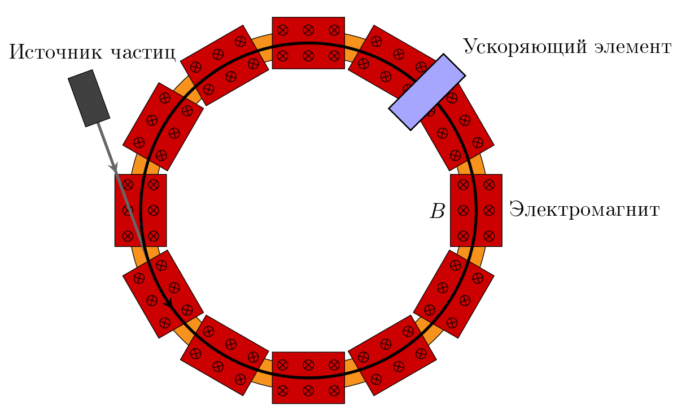

Y26 (2026) — English translation
A synchrotron is a cyclic resonant accelerator of both light and heavy particles. In a synchrotron, the orbit of accelerated particles remains constant, and the magnetic field changes with increasing particle energy, ensuring cyclical motion of particles (circular or more complex orbit) and stability of motion using weak or strong focusing. Acceleration of particles is carried out by a high-frequency alternating electromagnetic field; accelerating systems are placed, as a rule, in straight sections free from the magnetic field.
In this problem the following notation will be used: $e$ value of elementary charge $m_e$ electron mass $m_p$ proton mass $v$ particle speed $c$ speed of light $\gamma$ particle gamma factor
In this problem the following notation will be used:
Particles enter the synchrotron acceleration cycle with non-zero energy. For initial acceleration, a linear or other cyclic accelerator is used. In this case, the initial energy usually exceeds several tens of MeV, but not more than $100-200~МэВ$, therefore the motion of electrons (rest energy $0.511~МэВ$) is initially strongly relativistic, and the motion of protons (rest energy $938~МэВ$) is non-relativistic. At the same time, the synchrotron allows one to obtain energies of tens of GeV (that is, even protons become relativistic). Due to this fact, we will consider electron and proton synchrotrons separately.

Electron synchrotron Let us consider the motion of an electron in a circular orbit with radius $R$. As acceleration progresses, the period of motion $T$ practically does not change, since the speed of the electron is always approximately equal to the speed of light. The magnitude of the magnetic field $B$ is controlled so that the radius of the electron's orbit does not change.
Let us consider the motion of an electron in a circular orbit with radius $R$. As the acceleration progresses, the period of motion $T$ practically does not change, since the speed of the electron is always approximately equal to the speed of light. The magnitude of the magnetic field $B$ is controlled so that the radius of the electron's orbit does not change.
In the accelerating element, the voltage changes according to a harmonic law with frequency $\omega_U = n \cdot 2 \pi /T$, where $n$ is a natural number. During one revolution of the particle, its energy changes by $$\Delta E = T\frac{dE}{dt} = eU\cos\varphi,$$где $U$ – амплитуда напряжения на ускоряющем элементе, $\varphi$ – фаза электромагнитного поля в момент, когда частица пролетает через ускоритель. Равновесной называется такая частица, что фаза $\varphi$ остается постоянной (за один оборот частицы она изменяется на $2\pi n$, which can be ignored, since this does not affect the acceleration).
Proton synchrotron The main difference of a proton synchrotron is the need to take into account the increase in particle speed. In this case, the frequency of the resonators of the accelerating elements should change with time. Let us consider the motion of a proton in a circular orbit with radius $R$. The frequency of the accelerating electromagnetic field is controlled so that it is always $n$ times the angular velocity of the protons. The magnitude of the magnetic field $B$ is controlled so that the radius of the proton orbit does not change.
The main difference of a proton synchrotron is the need to take into account the increase in particle speed. In this case, the frequency of the resonators of the accelerating elements should change with time.
Let us consider the motion of a proton in a circular orbit with radius $R$. The frequency of the accelerating electromagnetic field is controlled so that it is always $n$ times the angular velocity of the protons. The magnitude of the magnetic field $B$ is controlled so that the radius of the proton orbit does not change.
Now let us consider the behavior of differently accelerated nonequilibrium particles between flights through the accelerating element (the magnetic field does not change in time). For such particles, the phase $\varphi$ is different for each flight (over one period it changes not a multiple of $2 \pi$). In accelerators with complex geometries, the magnetic field is not uniform, and the particle trajectory may not be a circle. The orbital expansion coefficient $\alpha$ shows how the orbital length of the particle $L$ changes when its momentum changes: $$\alpha = \frac{p}{L}\frac{\partial L}{\partial p},$$где $L$ – длина орбиты (в случае движения по окружности $L = 2\pi R$). Из общих соображений понятно, что в ускорителе желательно иметь $\alpha$ как можно меньшей величины. Тогда орбита слабо реагирует на изменение импульса, то есть более устойчива.
Слабая фокусировка. При таком устройстве ускорителя поле электромагнитов однородно вдоль круговой орбиты равновесных и неравновесных частиц. При этом зависимость поля от радиуса орбиты имеет вид: $$B(R) = \frac{\text{const}}{R^\xi},$$ где $0 < \xi < 1$.
Strong focus. With this accelerator design, a system with a non-uniform magnetic field is used, which makes it possible to obtain $\alpha \ll 1$. Let us denote by $\omega=2\pi/T$ the cyclic frequency of the periodic motion of particles in the accelerator. We will be interested in the value: $$K = \frac{E}{\omega}\frac{\partial \omega}{\partial E},$$ которая показывает, как сильно отличатся циклическая частота движения частиц с близкой энергией.
Нас будет интересовать величина: $$K = \frac{E}{\omega}\frac{\partial \omega}{\partial E},$$
which shows how much the cyclic frequency of motion of particles with similar energies differs.
The critical energy is the particle energy at which $K = 0$.
Let us consider the process of acceleration of nonequilibrium particles. Let us denote $\omega_0$ and $\omega$ the cyclic frequencies, $\varphi_0$ and $\varphi$ the phases of the accelerating element, $E_0$ and $E$ the energies of the equilibrium and nonequilibrium particles, respectively. The frequency of the accelerating electromagnetic field is $n\omega_0$ and the equilibrium phase is $\varphi_0 = \text{const}$. For nonequilibrium particles, the $\varphi$ phase is different for each flight (over one period it does not change by a multiple of $2 \pi$). Let us denote by $\mathcal{E} = E - E_0$ the difference in the energy of a nonequilibrium particle from an equilibrium one.
The change in particle energy per revolution is equal to $eU\cos\varphi$. Next, assume that the changes over time $K$, $E_0$ and $\omega_0$ are small and can be neglected when considering the changes in $\mathcal E$ and $\varphi$.
At the initial moment of time, the phase of some particle is $\varphi = \varphi_i \in [-\pi,\pi]$, and its energy deviation from the equilibrium one is $\mathcal{E} = \mathcal{E}_i$.
Source: https://pho.rs/p/5053